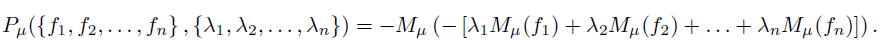

Piecewise linear quadratic (plq), nonconvex proximal average via Moreau envelopes
pa = plq_pa_mu(mu, lambda, f1, f2) pa = plq_pa_mu(mu, lambdas, f1, ..., fN)
constant. Smoothing parameter.
constant. The lambda value to associate with f2.
vector. The lambdas associated with each function.
matrix. The plq functions to take the average of.
matrix. The plq proximal average of f1 through fN.
Compute the proximal average (PA) of a variable number of plq functions at specified lambda values. The PA is computed using the following formula, where M(mu,f) represents the Moreau envelope of function f with smoothing parameter mu. This method does not require the input functions to be convex. If only two functions are averaged, then one lambda value can be specified for f2, and the lambda for f1 will be (1-lambda). The proximal average is computed in linear time with respect to the size of the input functions.

f1 = [2,0,2,-4; inf,0,0,0]; f2 = [-3,0,30,90; 0,0,0,0; inf,1,0,0]; result = plq_pa_mu(0.2, 0.3, f1, f2), plq_plotMultiple(false, false, f1, f2, result); |
Bryan Gardiner, University of British Columbia, BC, Canada